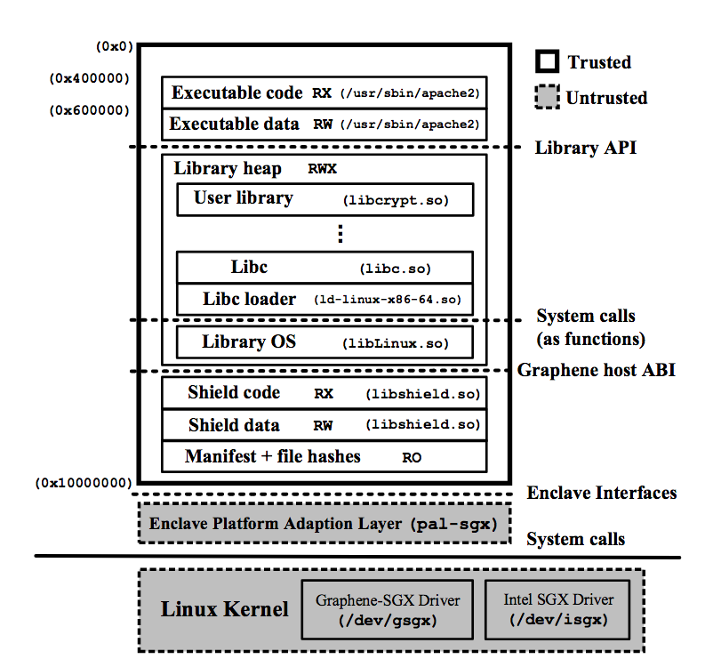
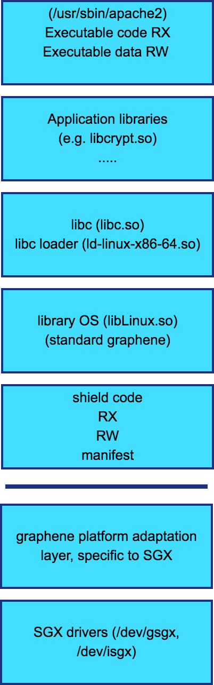
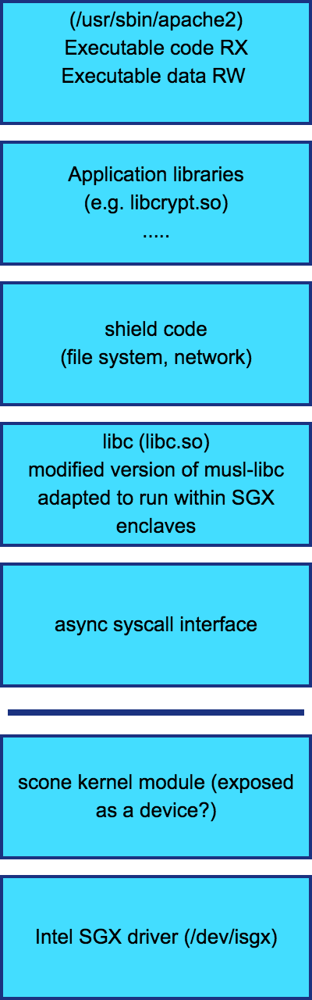
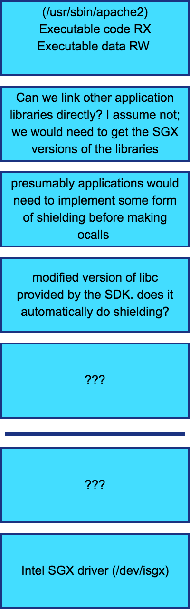

Secure execution options¶
After much discussion, we have settled on secure execution using enclaves as our strategy for all cloud execution. We can use enclaves to convert user raw data into processed data, as well as to generate user responses to queries and aggregate them. For aggregation, we will want bi-directional attestation so that the aggregator enclave can verify that it is getting data from valid user enclaves, and that the user enclaves can verify that their unmasked data will go to a valid aggregator that will not leak the information. Note that although the aggregator can verify that the user enclaves are valid, it cannot verify that the values provided by the values are correct.
There are multiple options to use enclaves to perform such computation. We need to understand them and ensure that they work for our use case, in which the running code is in an interpreted language (python).
Three main alternatives¶
The three main options for running code in an enclave appear to be: 1. Use the SDK directly: Intel has an SDK to help people write enclave programs. Programs need to be rewritten to use the SDK. Link 1. Use a shim (scone): Use a simple libc that is rewritten to run within the enclave. Existing applications can be recompiled against the modified C library and run transparently within the enclave. Link 1. Using a library OS (graphene): Use standard C libraries, but integrate a libraryOS into the enclave. The libraryOS will make calls to the "host", which will be translated into syscalls through the host kernel. Link
Our requirements¶
It is also useful to clearly state our requirements as a basis for comparison. Since Graphene is open source, and @chiache has expressed interest in working with us to understand these requirements, I am also filing issues in the graphene repository for each of them. We can track more detailed implementation decisions there.
- We want to support containerized execution of code. Since users will be motionless for large stretches of time, and only push data at the end of their trips, the enclaves will be idle most of the time, and might as well be paused for greater scalability. If we do have a constant stream of aggregate queries, this may be less important, but we don't yet know what the aggregate query profile will look like. Filed issue 383.
- We want to support remote attestation. Our architecture relies on the ability for smartphones to remote attest the code running in the user enclaves that they upload data to, as well as for user enclaves to attest the aggregator enclave that will ensure differential privacy of the results. Commented on issue 46
- We want to support secure execution of interpreted programs, in particular, python. This is because we expect that the algorithms that users choose to run in their enclaves will be contributed primarily by transportation or computational transportation researchers and will be written in python. Filed issue 384
Comparison of the options¶
Both scone and graphene have architecture diagrams, but I liked the graphene one better because I felt that the increased detail made it clearer. Here's the diagram - Figure 3 from the paper.

In order to have a direct comparison, I tried to draw similar diagrams for the other two options as well. As you can see, there are multiple questions around how some of the other options work.
| Graphene | Scone | Intel SDK |
|---|---|---|
 |
 |
 |
Other questions¶
There are some other questions that I would like to understand better before making the final decision.
How do Graphene and SCONE use their own C libraries?¶
According to the Intel SDK documentation, enclave functions must use a trusted version of the C libraries supplied with the SDK. However, both Graphene and Scone use their own versions of the C library - graphene uses glibc (unclear whether modified or unmodified); scone uses a port of musl-libc. How does this allowed?
One answer could be that if you use the SDK, you must use the trusted C libraries, but if you use your own loader, you can use anything else, including your own libc. Both graphene (page 647) and scone (page 694) do not use any part of the SDK other than the driver, and aesmd.
How does the SDK actually work?¶
See questions in the diagram.
What is the story around linking libraries?¶
This shouldn't really matter from a user perspective, except that UNIX tool results don't seem to match the claims in the documentation.
Intel SDK¶
- Claim: C/C++ calls to System provided C/C++/STL standard libraries are not supported from within the enclave. Trusted libraries that are specifically designed to be used inside enclaves are included with the SDK.
-
Observation: standard C libraries (from
/liband/usr/lib) are linked to an enclave application (e.g. https://github.com/njriasan/sgx-trust-management/tree/master/application). Maybe the SDK replaces the standard libraries? Note thatlibsgx_urts.sois also loaded from/usr/lib# ldd sgx-trust/application/app linux-vdso.so.1 (0x00007ffff9dd9000) libsgx_urts.so => /usr/lib/libsgx_urts.so (0x00007f1f1a89c000) libcrypto.so.1.1 => /usr/lib/x86_64-linux-gnu/libcrypto.so.1.1 (0x00007f1f1a424000) libpthread.so.0 => /lib/x86_64-linux-gnu/libpthread.so.0 (0x00007f1f1a205000) libsgx_uae_service.so => /usr/lib/libsgx_uae_service.so (0x00007f1f19fc5000) libc.so.6 => /lib/x86_64-linux-gnu/libc.so.6 (0x00007f1f19bd4000) libdl.so.2 => /lib/x86_64-linux-gnu/libdl.so.2 (0x00007f1f199d0000) libstdc++.so.6 => /usr/lib/x86_64-linux-gnu/libstdc++.so.6 (0x00007f1f19642000) libgcc_s.so.1 => /lib/x86_64-linux-gnu/libgcc_s.so.1 (0x00007f1f1942a000) /lib64/ld-linux-x86-64.so.2 (0x00007f1f1acc6000) libprotobuf.so.10 => /usr/lib/x86_64-linux-gnu/libprotobuf.so.10 (0x00007f1f18fd1000) libm.so.6 => /lib/x86_64-linux-gnu/libm.so.6 (0x00007f1f18c33000) libz.so.1 => /lib/x86_64-linux-gnu/libz.so.1 (0x00007f1f18a16000)
Scone¶
- Claim: Unsure. Page 696 says that the application is statically linked. Shared libraries are not supported by design so that all enclave code can be verified. However, Page700 says that the application and all dependent libraries are linked into a shared object file.
- Observation: application library and scone library are linked as two dynamically loaded libraries for the cross-compiled scone application (e.g.
python3.5in the scone python docker image)# ldd /usr/bin/python3.5 /opt/scone/lib/ld-scone-x86_64.so.1 (0x7f3209065000) libpython3.5m.so.1.0 => /usr/lib/libpython3.5m.so.1.0 (0x7f32089fd000) libc.scone-x86_64.so.1 => /opt/scone/lib/ld-scone-x86_64.so.1 (0x7f3209065000)
Graphene¶
- Claim: Applications are dynamically-linked, and Graphene uses the manifest along with the custom loader to verify dynamically linked libraries.
- Observation: ??? (need to install and experiment)
How does attestation work for interpreted languages such as python?¶
In all cases, it looks like attestation primarily works for statically linked native code. Graphene had to build in special functionality in order to support dynamically loaded native code. But then what happens for interpreted languages such as python?
Presumably the CPU, even with Graphene, will attest the python interpreter. But the python interpreter can run any code. It can even be invoked interactively and run any commands provided by the user through the console. How can the clients then verify that a python application running in the enclave does what we want it to?
- Does the file authentication option of Graphene (page 650) solve this problem? I don't see how it does given the option for console input. And yet, one of the use cases considered is R, which is also a scripting language, so they must have solved it.
- How does scone solve this problem? scone has a python container, and an attestation service, so they must have solved this problem.
- The SDK cannot solve this problem since it only supports C/C++. Please confirm :)